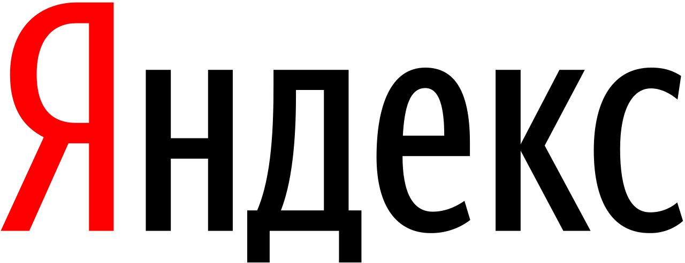

| Search Engine | People | Speed Search | Income |
| 2 bln | 25ms | 500 mln | |
| Bing | 20 mln | 50ms | 10 mln |
| Yandex | 50 mln | 42ms | 120 mln |
Google's mission statement is "to organize the world's information and make it universally accessible and useful", and its unofficial slogan was "Don't be evil".
Yandex is a Russian multinational corporation specializing in Internet-related products and services, including search and information services, eCommerce, transportation, navigation, mobile applications, and online advertising. Yandex provides over 70 services in total. Incorporated in the Netherlands, Yandex primarily serves audiences in Russia and the Commonwealth of Independent States. The company founders and most of the team members are located in Russia. The company has 18 commercial offices worldwide. It is the largest technology company in Russia and the largest search engine on the internet in Russian, with a market share of over 52%. The Yandex.ru home page is the 4th most popular website in Russia. It also has the largest market share of any search engine in the Commonwealth of Independent States and is the 5th largest search engine worldwide after Google, Baidu, Bing, and Yahoo!.

Bing is a web search engine owned and operated by Microsoft. The service has its origins in Microsoft's previous search engines: MSN Search, Windows Live Search and later Live Search. Bing provides a variety of search services, including web, video, image and map search products. It is developed using ASP.NET. Bing, Microsoft's replacement for Live Search, was unveiled by Microsoft CEO Steve Ballmer on May 28, 2009, at the All Things Digital conference in San Diego, California, for release on June 1, 2009. Notable new features at the time included the listing of search suggestions while queries are entered and a list of related searches (called "Explore pane") based on semantic technology from Powerset, which Microsoft had acquired in 2008.

The Google company was officially launched in 1998 by Larry Page and Sergey Brin to market Google Search, which has become the most widely used web-based search engine. Page and Brin, students at Stanford University in California, developed a search algorithm at first known as "BackRub" in 1996. The search engine soon proved successful and the expanding company moved several times, finally settling at Mountain View in 2003. This marked a phase of rapid growth, with the company making its initial public offering in 2004 and quickly becoming one of the world's largest media companies. The company launched Google News in 2002, Gmail in 2004, Google Maps in 2005, Google Chrome in 2008, and the social network known as Google+ in 2011, in addition to many other products. In 2015, Google became the main subsidiary of the holding company Alphabet